| ID | Severity | Where | What happened | Expected | Suggested fix | Effort | Evidence | Status |
|---|---|---|---|---|---|---|---|---|
| CONFIG-01 | causes errors | Owner, Nightly rates card, Demo Property with 3 units and no prices | All four unit kinds read “No price” in muted grey. The only consequence is small grey text: “Bookings of this kind are taken without a price, and their nights are not charged.” Nothing on the page, the section list or the card header marks the Property as not ready to trade. | A new owner is told, at the top of the page or on the card, that Room (2 units) and Suite (1 unit) have no price and that every night will be free until they do. | Warning tone on the card plus a count in the section chip (“Nightly rates · 2 unpriced”); same treatment for any other unset setting once there are any. | S | 01; reproduced Y | verified |
| CONFIG-02 | causes errors | Owner, Housekeeping card (“Check rooms after cleaning”) and Maintenance card (3 questions × Organization default / This Property) |
These selects write on change: onValueChange calls
the server action straight away
(inspection-settings.tsx,
maintenance-settings.tsx; the comments say
“Saved on change”). The “Organization
default” selects change every Property of the Organization
in one click, with no confirmation, no count of Properties
affected and no undo. Not pressed.
|
Either the same Save/Discard bar as the cards above, or at minimum a confirm step naming the scope (“This changes all N Properties”) on the Organization-level selects. |
Confirm dialog on the Organization-scope selects; add “saves
immediately” text under the card headings, or move both onto
SettingsCard with a footer.
|
M | 01 (cards have no footer); code | inferred |
| CONFIG-03 | causes errors | Owner, any card with a draft; also leaving by sidebar link or browser Back |
With a time-zone draft and an enabled Save button, I clicked
“Today” in the sidebar: navigation happened with no
prompt. There is no beforeunload or route guard
anywhere in the app (searched: none). Drafts live in
useState, so they are gone on return. Four
independent Save bars (Organization, Property, Time, Rates) also
mean a draft in one card is silently dropped if you press Save in
another.
|
A warning when leaving with unsaved edits, and some page-level sign that a card still has unsaved changes. | Route/unload guard while any card is dirty; mark the dirty card’s section chip with a dot. | M | navigation without prompt seen in session (no screenshot of the dirty draft after leaving); code search | verified (no prompt) / inferred (draft lost on return) |
| CONFIG-04 | causes errors | Owner, Property card, currency, on a Property whose currency is still changeable (not reachable on staging, it is already locked) | While changeable, the currency is a plain searchable picker with no note. The explanation (“Fixed since a folio was opened or a priced booking was taken here”) appears only after the lock. ADR 0036 makes the lock one-way and permanent. The locked message also gives no next step (the ADR calls it “a finance workflow”, which is not built). | Before the first booking, the owner is told “This becomes permanent when the first booking is priced or the first folio opens”. After the lock, the message says who to ask or what to do. |
Add a permanence note under the picker when
currencyFixed is false; add a next-step line to the
locked note.
|
S |
01 (locked state only);
property-settings-form.tsx
|
inferred |
| CONFIG-05 | slows me down | Owner, Time zone picker | Typing “Turkey” lists Louisville, Monticello, Yekaterinburg, Yakutat and no Istanbul (fuzzy letter matching, and only city and IANA name are searchable). Typing “Los Angeles” works. | An owner types their country or the offset (“Turkey”, “Türkiye”, “GMT+3”) and finds their zone. |
Add country names (and offsets) to each option’s
keywords in options.ts; tighten matching
to substring.
|
S | 03; reproduced Y | verified |
| CONFIG-06 | slows me down | Manager and Front Desk, every read-only card |
Four different explanations for the same state, two of them naming
roles: “You can see these settings. An Owner or Manager can
change them.” (Property, Time), “A manager can change
this.” (Housekeeping), “Changing this needs the
permission to manage maintenance.” (Maintenance),
“Prices are changed by whoever may set rates.”
(Rates). Organizations can compose
configuration.manage into any role (ADR 0026), so the
role names can be wrong. The Manager’s Organization card is
the best: “Only someone who reaches every Property can
rename the Organization.”
|
One pattern: what is blocked, and the permission or reach that unlocks it, never a hard-coded role. | One shared read-only line built from the missing permission. | S | 11, 10; reproduced Y | verified |
| CONFIG-07 | slows me down | Owner, 375 px, Maintenance card, “A room comes back into service” |
The Organization-default and This-Property selects run past the
card’s right edge: text is clipped (“Use the
Organization’s (When its request is done”) and the
chevron is off-screen (ids
returnOnDone-organization and
returnOnDone-property measured past the viewport
minus gutter). The other two question pairs fit.
|
The selected value and chevron are fully visible at 375 px. |
Let the trigger shrink and truncate or wrap (min-w-0,
truncate) in maintenance-settings.tsx.
|
S | 07; reproduced Y | verified |
| CONFIG-08 | slows me down | Owner, 375 px, section list |
The eight section chips are 1,507 px wide in a 351 px
scroll strip and are not sticky (lg:sticky only). The
page is 4,747 px tall, so after the first screen the only way
to the Maintenance section is scrolling the whole page. Only two
and a half chips are visible with no scroll hint beyond the
clipped third chip.
|
Jump to any section from anywhere on the page, or a much shorter page. | Make the chip row sticky under the top bar on narrow screens. | S | 05, 06; measured | verified |
| CONFIG-09 | polish | Owner, Arabic (and by the same code, Turkish) | The currency is named in the reader’s language (“ليرة تركية (TRY)”, “Türk lirası (TRY)”) but the time zone is not: “Istanbul (Europe/Istanbul)” in Latin script in all three locales. CF-S3-10 says both are named in the reader’s language. | The time-zone trigger and list use a localized city/zone name. |
Use Intl.DisplayNames or
timeZoneName: "long" for the label; keep
IANA id as the detail.
|
S | 08; reproduced Y | verified |
| CONFIG-10 | polish | Owner, Time and the business day | “Business day ends at 04:00” with “A night shift before the cutoff is still working the day before” is the only explanation. It does not say what moves with it (arrivals, departures, close the day, posted charges). | A first-time owner understands that this is when “today” rolls over for the whole product. | Reword: “Today rolls over at 04:00. Anything before that still counts to yesterday”. Keep the live preview, which is good. | S | 04 | verified |
| CONFIG-11 | polish | All roles, “Switched on here” card | Eleven capabilities are listed as read-only tiles that duplicate the sidebar (including “Today”). The title reads like a set of switches but nothing can be switched (deferred, CF-DEF-02). At 375 px it is eleven full-width rows. | A card whose content either changes a decision or is not there. | Collapse by default, or drop until switching exists. | S | 01, 12 | verified |
| CONFIG-12 | polish | Owner, Nightly rates card | Price fields are offered for Bed and Apartment, which the Property has none of (“None at this Property yet”). Nothing says whether pricing them now has any effect. | Either hidden or labelled “applies when you add one”. | One line of copy. | S | 01 | verified |
| CONFIG-13 | polish | Owner, Housekeeping and Maintenance cards |
These two cards are drawn differently from the four above them: no
icon, no header divider, no footer, a different heading level
(h2/h3 inside a plain
Card versus SettingsCard). They share
the section list with the others, so the page reads as two
designs.
|
One card anatomy for every section. |
Wrap both in SettingsCard (their components also
serve the Housekeeping and Maintenance screens, so pass a
variant).
|
M | 01; code | verified |
app.property_today(), the
currency by folios and rates, the names by the rail and top bar
(visible: “Prizic Demo” in the rail, Property name in the
top bar). The save refreshes the whole workspace
(revalidateWorkspace). inferred from
ADR 0036 and the server action. The unreadable
default_locale is deliberately not shown (CF-DEF-01).
save-bar.tsx and the
form.
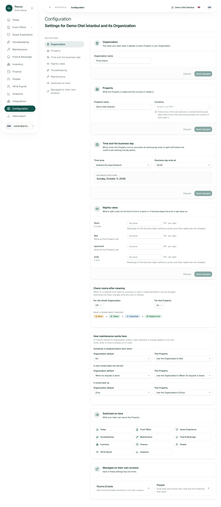
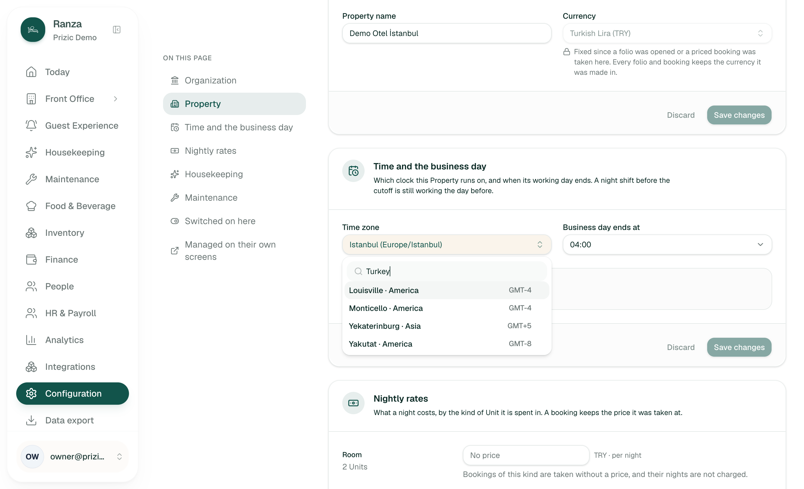
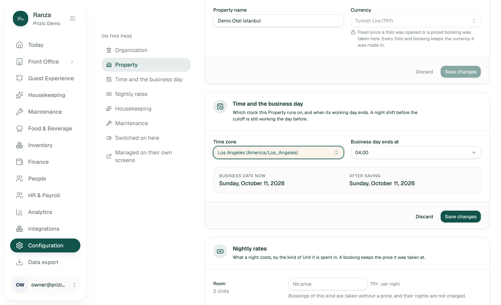
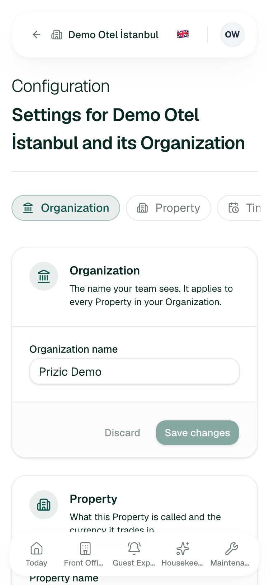
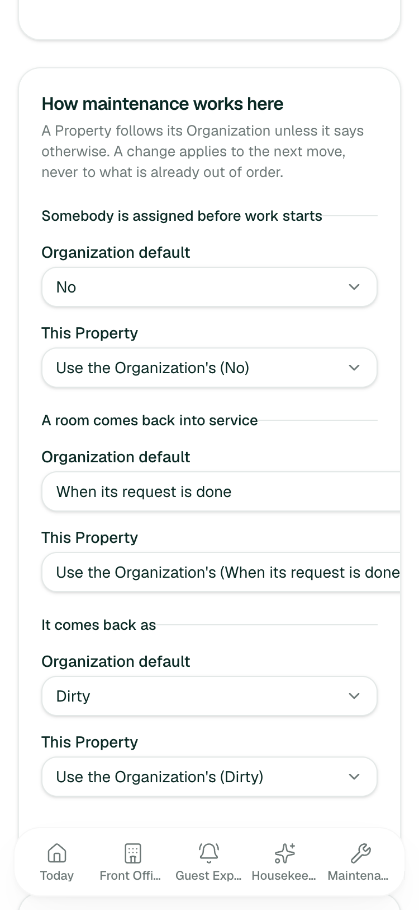
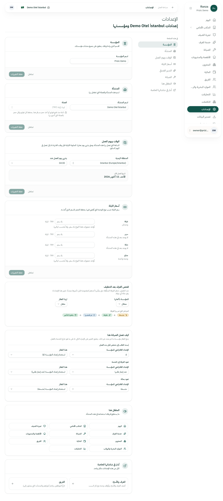
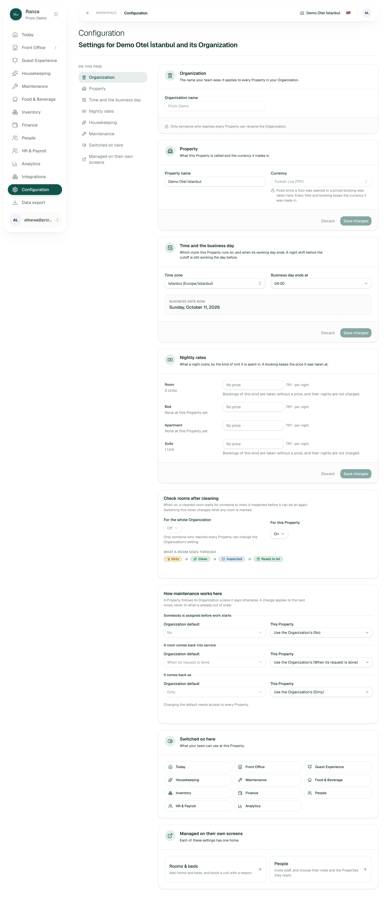
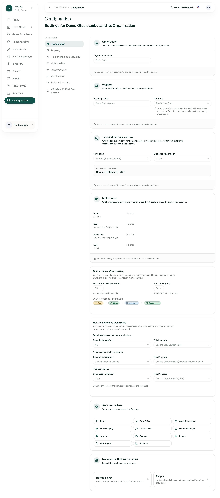
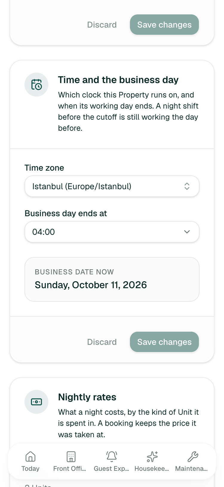
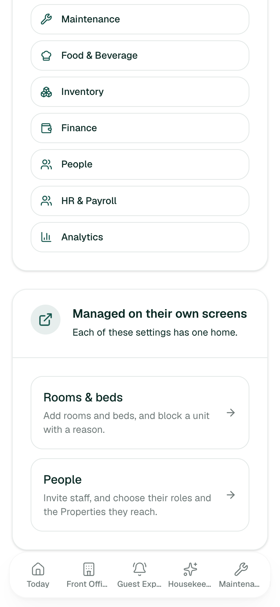
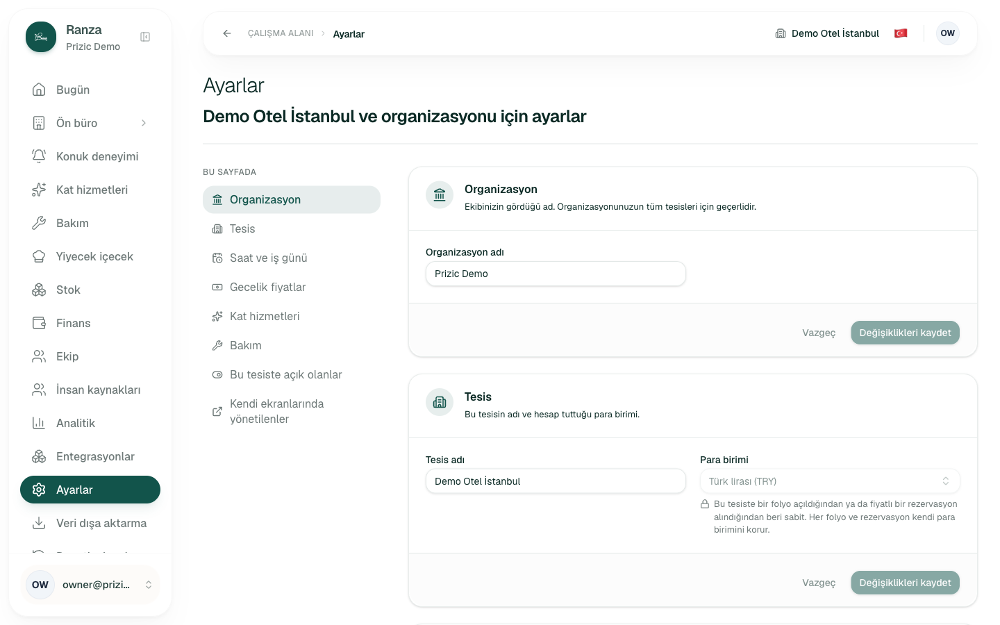
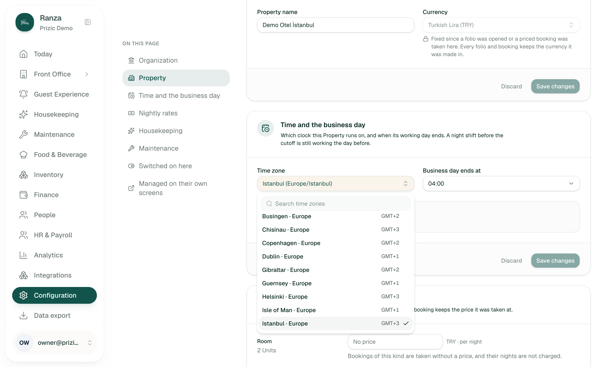
Pass/fail tests were written before each attempt. “Stopped” means stopped before submit, nothing persisted. Seconds are estimates.
| # | Job | Pass test (written first) | Result | Secs | Clicks |
|---|---|---|---|---|---|
| 1 | First-time setup: work out what is still unconfigured at a new hotel | Within 60 s the page itself tells me which settings are unset and in what order to do them | FAIL. No checklist or order. The only unset thing (unit prices) is quiet grey text (CONFIG-01). Judged on the already-configured demo Property, so a truly empty Property is inferred. | ~60 | 1 |
| 2 | Set standard check-in and check-out times | Find a control for them within 2 clicks | FAIL. Does not exist; see section 6 (Not built). | ~30 | 2 |
| 3 | Change the time zone and see the effect before saving | Find a zone by typing; see business date before and after; nothing saved | PARTIAL. City search and preview work; country search does not (CONFIG-05). Stopped before Save, discarded by leaving. | ~35 | 3 (open, type, Enter) |
| 4 | Rename the Property quickly (most frequent change) | At most 3 clicks; Save disabled until a change | PASS (inferred). Save and Discard verified disabled on all cards before a change and enabled after the zone draft; rename is click, type, Save = 3. Stopped, not pressed. | ~10 | 3 |
| 5 | Change currency after bookings exist | Told why not, and what to do instead | PARTIAL. Picker disabled with reason (verified); no next step; no pre-lock warning (CONFIG-04). | ~15 | 1 |
| 6 | Error recovery: leave with an unsaved edit, then come back | I am warned, or my edit is still there | FAIL. Left through the sidebar with an enabled Save: no warning (CONFIG-03). | ~20 | 4 |
| 7 | Under pressure, as Front Desk: why can’t I change the cutoff and who can? | Each blocked control says who can change it | PASS with inconsistent wording (CONFIG-06). Verified on all cards. | ~25 | 0 |
| 8 | Phone, 375 px: reach the Maintenance setting and read it | Two taps, value fully readable | PARTIAL. Chips scroll but are not sticky (CONFIG-08); two selects overflow (CONFIG-07). | ~45 | scroll + 1 |
Bulk/large volume: the largest lists are about 400 time zones and every
ISO currency, built only when the picker opens
(searchable-picker.tsx), and four unit-type price fields
saved as one list with one version. Nothing here grows with data, so I did
not look for a large-volume failure. inferred.
SearchablePicker built from Command and
Popover, while Staff, Audit log and Move guest use the
shared Combobox from packages/ui. Different
keyboard and matching behaviour is likely (inferred
from imports; I did not compare them live).
/en,
/tr, /ar, verified by loading all three).
Configuration has no language setting, so there is no confusion between
the two today, but the owner who looks here for “languages”
finds nothing. Whether the header choice is remembered across sessions:
unknown, not checked.
These are not UX defects. Each is checked against the docs.
docs/roadmap.md and the screens handover have no row for
it. No CF-DEF-* row covers it either, so the gap is not
recorded as deferred.
CF-DEF-01 to CF-DEF-05).
CF-DEF-01):
the column exists and nothing reads it.
CF-DEF-02),
department or outlet scoped values
(CF-DEF-03),
adding or retiring a Property (CF-DEF-04).